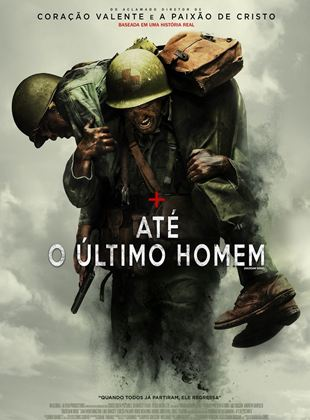

Até o Último Homem

Sinopse & Info:
Não recomendado para menores de 16 anos
"Desmond T. Doss (Andrew Garfield) é um jovem que sonha ser médico do exército e, que, durante a Segunda Guerra Mundial, se recusa a pegar em uma arma e matar pessoas. Porém, durante a Batalha de Okinawa ele trabalha na ala médica e salva mais de 75 homens, sendo condecorado. Doss foi o primeiro Opositor Consciente da história norte-americana a receber a Medalha de Honra do Congresso."
Mel Gibson esteve afastado do cinema pelo vício em álcool, por seu gênio incontrolável, por suas brigas explosivas. Mas em nenhum momento se pode negar sua competência como ator e diretor.
Embora, desta vez, esteja só atrás das câmeras, é possível sentir sua presença nessa obra de arte, baseada em fatos reis acontecidos na Segunda Guerra Mundial.
Desmond é um jovem que vive com os pais e um irmão no interior dos EUA e cresce lutando com seu irmão e apanhando do pai, o ator Hugo Weaving de Matrix, ex-combatente da Primeira Guerra Mundial. Então ele faz uma promessa, por ser adventista e ter muita fé, de que obedeceria ao mandamento de jamais matar, tampouco pegar em uma arma. Até que vem a guerra e todos seus amigos estão se alistando, inclusive seu irmão. Desmond faz o mesmo.
Nessa primeira parte do filme ele conhece a enfermeira Dorothy (Teresa Palmer), por quem se apaixona e quem o ajuda a entender melhor a profissão de médico.
Então acompanhamos o treinamento de Desmond no exército e tudo pelo qual passará, tendo em vista que se auto intitula um Opositor Consciente, contra a guerra. Desmond quase vai à corte marcial por desobedecer a ordem de pegar em uma arma. Além de sofrer violência entre os companheiros de pelotão. Quem pode desejar ter um soldado por perto que se nega a lutar?
Até o Último Homem é um filme de guerra e drama biográfico de 2017 e foi dirigido por Mel Gibson e escrito por Andrew Knight e Robert Schenkkan baseado no documentário The Conscientious Objector de 2004.
Lançado em 26 de janeiro de 2017, o filme arrecadou US$ 175,3 milhões em todo o mundo e recebeu críticas geralmente favoráveis, com a direção de Gibson e o desempenho de Garfield ganhando elogios notáveis. Hacksaw Ridge foi escolhido pelo American Film Institute como um dos dez melhores filmes do ano , e recebeu inúmeros prêmios e indicações. O filme recebeu seis indicações ao Óscar durante a 89ª cerimônia nas categorias de melhor filme, melhor diretor, melhor ator (por Garfield) e melhor edição de som e venceu nas categorias de melhor mixagem de som e melhor edição.Também recebeu indicações ao Globo de Ouro de melhor filme dramático, melhor diretor e melhor ator dramático (Garfield), e 12 prêmios da AACTA, incluindo o de melhor filme, melhor direção, melhor roteiro original, melhor ator (por Garfield) e melhor ator coadjuvante (por Hugo Weaving).